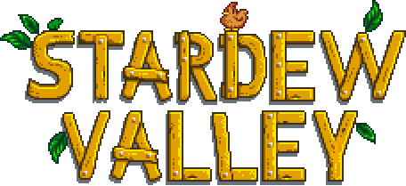

La historia sobre la granja
Heredaste la vieja parcela de tu abuelo en Stardew Valley. Armado con herramientas de segunda mano y unas pocas monedas, te dispones a comenzar tu nueva vida.
Próxima actualización:
Coste:


Heredaste la vieja parcela de tu abuelo en Stardew Valley. Armado con herramientas de segunda mano y unas pocas monedas, te dispones a comenzar tu nueva vida.
Próxima actualización:
Coste:
NO te olvides de revisar la television todos los dias
Puedes ver los siguientes canales: